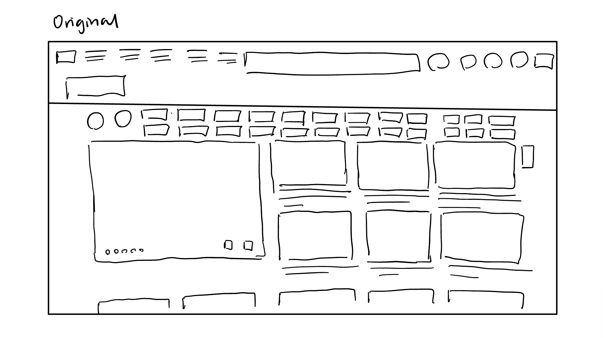
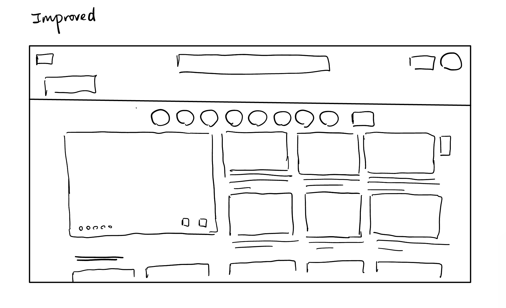

-
Using the favorite website you chose in homework 1, create a wireframe for one page of it using pen/paper, PowerPoint, or any your tool of choice. (use the 'img' tag!) Make sure to let us know what the name of your website is (Use the 'p' tag!)
Favorite Website: bilibili 
-
Try to improve the website you've chosen, and create a redesigned wireframe of one page for the same website using the principles of visual hierarchy that you learned from the article.

-
What is the goal of the website? Who is it intended for? How does the design accomplish this? Write 2-3 sentences answering these questions. (Use the 'p' tag again!)
The goal of the website is to enable users to find the video-contents they like. The design of the web shows a lot of categories users can choose from, and also provides users with videos on the homepage where the users can click on and start watching directly.
-
Write 2-3 sentences about what problems your redesign addressed, and how it solved them.
I specifically focused on minimizing the tabs on the page. The original layout has more than 20 buttons the users can click on to get to their desired categories. Instead, I simplified it to one single row of tab. Instead of showing every single categories the website offers, the page can be minimalized if it only shows the categories the user views the most frequenly and have a separate tab for users to get to all the categories when they actually want to.
NOTE: Make sure to include the wireframe images in the website and don't just put it in your assets folder!
Your wireframes should look something like this: